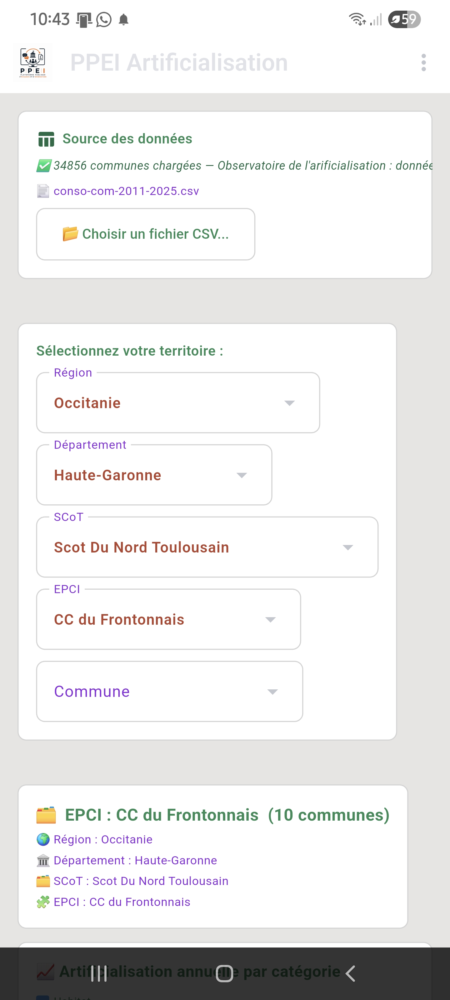
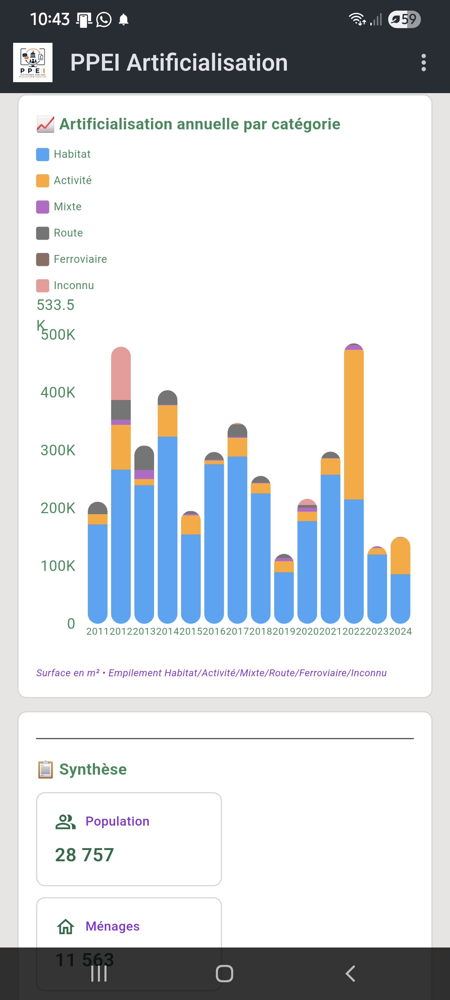
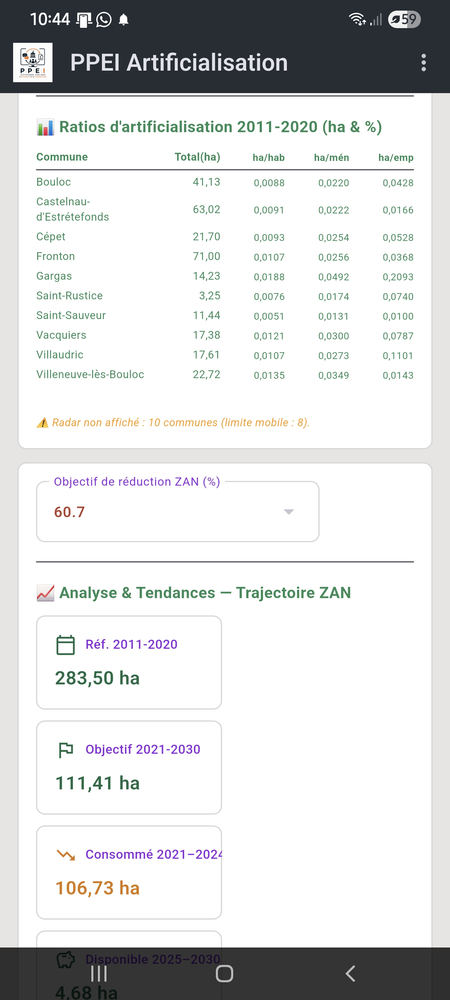
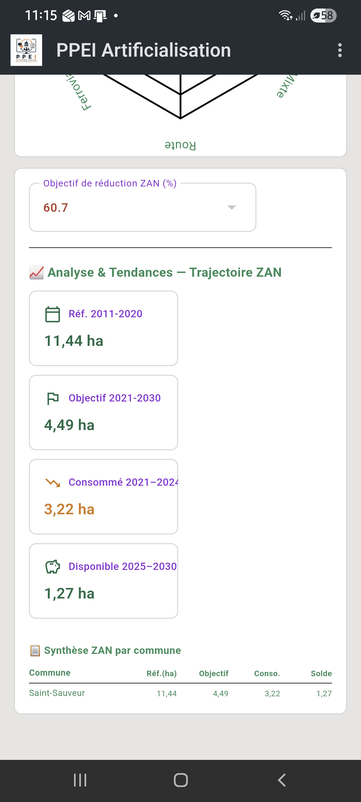
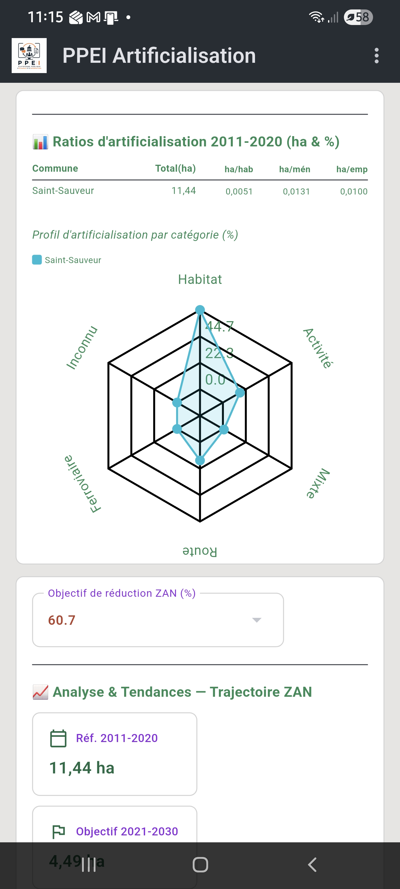
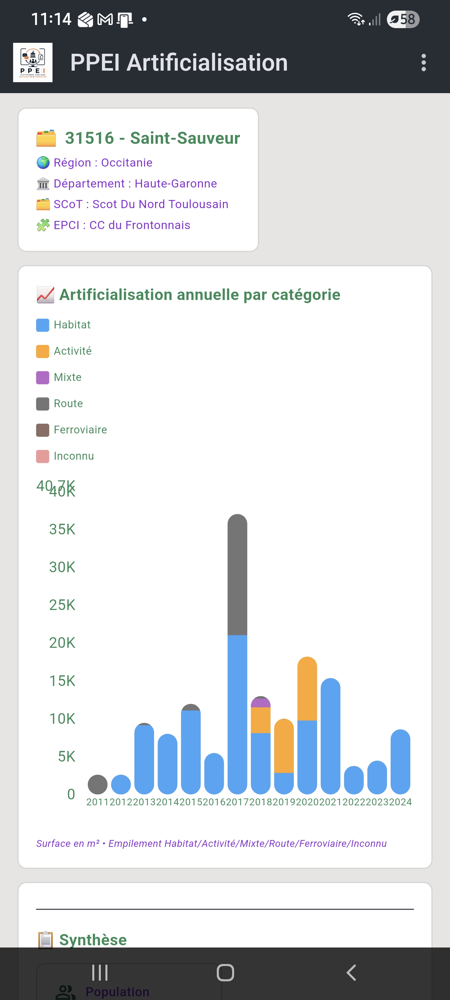

Fonctionnalités
- Chargement direct des données CEREMA (consommation d'espaces par commune)
- Calcul de la trajectoire ZAN et de l'écart aux objectifs de réduction
- Classements et comparaisons entre communes d'un même EPCI
- Graphiques d'évolution annuelle des flux de consommation
- Export des résultats (version Windows)
Disponibilité
| Plateforme | Statut |
|---|---|
| Windows | Disponible (exécutable autonome) |
| Android | Disponible sur le Google Play Store |
Captures d'écran






Télécharger
Téléchargements pour PPEI-Artificialisation :
Liens à activer une fois les fichiers déposés dans une Release GitHub — voir README.md.